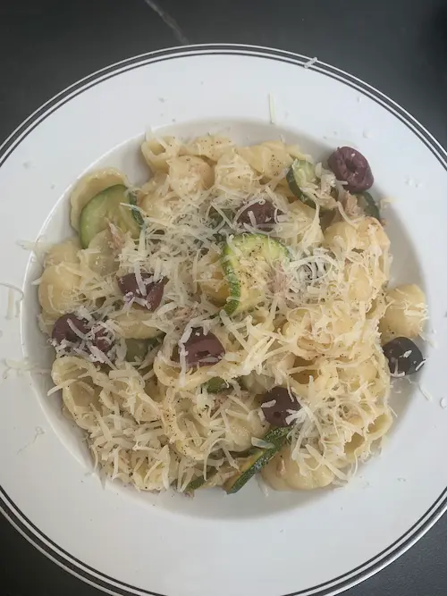
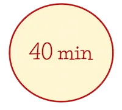

Forside
Alle Opskrifter
Kontaktinfo

Pasta med tun

Ikke fryser venlig
Print opskrift
Hold min skærm tændt
Ingredienser
Portioner:
500g pasta
1 dåse tun
1 løg
2 fed hvidløg
Salt og peber
1 squash
Parmesan
Olivenolie
1 spsk citronsaft
1 håndfuld basilikum
50g oliven
Instrukser
Skær squash i skriver og hak løg og hvidløg.
Smid det på panden med lidt olivenolie, salt og peber.
Giv det ca. 10 min eller til squash er gylden.
Kog pastaen imens.
Når squash er færdig tilføj tun, citronsaft, basilikum, lidt parmesan, oliven og lidt pastavand.
Bland tun-blandingen sammen med pastaen og anret med lidt parmesan på toppen.